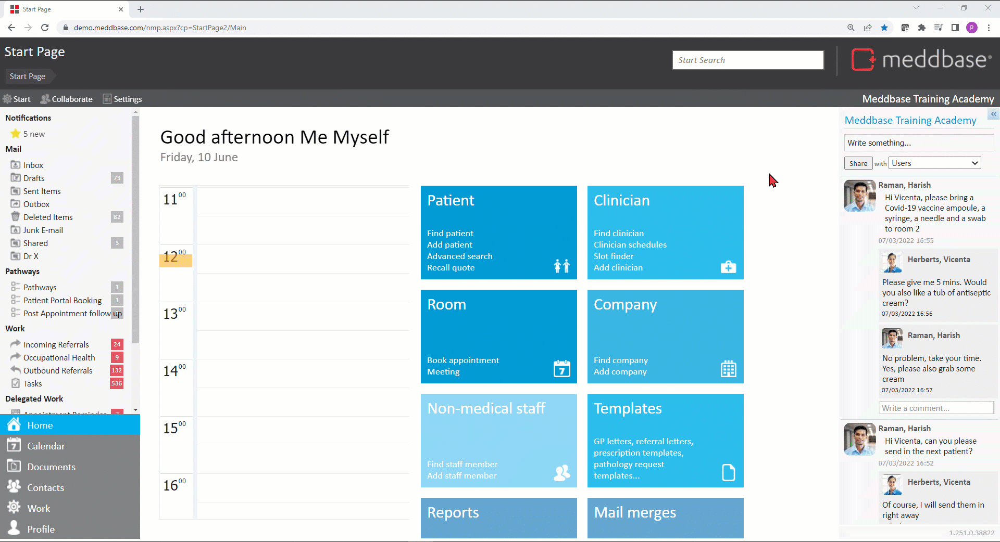

Meddbase System Administrators/Superusers with access to the Admin section of the Start Page can view and modify a host of configuration options and settings controlling the behaviour and workflows in the application. Many of the above are configured/controlled via the Configuration section*.
This article is a part of a collection of articles on the Admin > Configuration section.
Many of the settings described in this series have default values when a Meddbase chamber is first created and do not need changing.
* Access to the Admin section and the ability to add/change configuration and settings are determined by the User's Role Group membership and Security Policy permissions granted. Please refer to the below articles for more details.
Understanding Role Groups - Definitions, related workflows and behaviours
This article is an overview of the Admin > Configuration > Email section and the available settings within.
To access the Configuration section, a permitted User should:
1. From the Start Page navigate to Admin.
2. Click Configuration.
3. Click Email.

Warning: From the 30th September, Google Workspace SMTP will not support username and password authentication. Going forward, Google workspace will only support OAuth which Meddbase does not support. For more information on this, please follow this article from Google Workspace Updates. We advise clients who are using Google SMTP to change to another SMTP.
The below table explains each setting, field and/or tick box in detail:
| Setting | Description/effect |
|---|---|
| Automated email | |
| Sender | The email address that automated emails to patients, such as appointment confirmations and reminders, will be sent from. By default this is set to noreply@meddbase.com. When changing the default 'Sender' settings for automated and manual emails to an email domain of your choice our recommendation is to follow this article. |
| Client | The address that Admin emails will be sent to if Admin emails are enabled under the Task Checker. By default this is set to admin@meddbase.com. |
| BCC to address | This email address will be included as a BCC on all automated email sent by Meddbase, apart from password reset emails. |
| Manual email | |
| Sender | The email address that manual emails will be sent from. By default, the sender address is set to [yourusername]@meddbase.co.uk |
| SMTP | |
| Provider | The OAuth provider used for sending emails. For more information on using Google or Microsoft, see the configuration sections below. |
| Server | The name of the SMTP server. By default, this is set to smarthost.mm-sys.co.uk. If you wish to use your own email domain, our recommendation is that you update this setting with your SMTP server for the domain you are using. |
| Username and Password | The username and password used to authenticate with the SMTP server, if the server requires authentication. Use of special characters, e.g. <, >, #, ! etc., should be avoided in passwords. If you are using the default smarthost.mm-sys.co.uk, this should be left blank. |
| Use Authentication | If the SMTP server requires authentication, select Password. The Username and Password fields are made visible. If the SMTP server does not require authentication, select None. If Provider is set to Custom, choose XAUTH (OAuth2) to configure a custom OAuth method. |
| Use TLS | If checked, emails will be sent using Opportunistic TLS. Click here for more details on Opportunistic TLS. |
| Auto-confirm | |
| Auto-confirm and attach emails to patient records | Meddbase has a feature which allows emails sent to an @meddbase.co.uk address to be automatically attached to patient records if the subject or body of the email contains enough information to identify the patient, such as their Meddbase ID or name and DOB.
|
| Secure document sharing | |
| Allow attachments | This dropdown menu allows selecting the manner in which documents can be attached to emails:
|
| Secure link expiry (days) | An attachment sent as a secure link prompts the recipient to follow a link in the received email and subsequently request a verification code that gets sent to their mobile phone. Once they verify the code, they can access the attachment. This field allows specifying the number of days the link remains active. |
| Secure link text | This field allows selecting the template that generates the body of the email for secure link attachments. There is a default template in your chamber that contains Template Codes generating the link for the recipient to follow. The default message and Template Codes are as follows: If you choose to select a different template or edit the default, please ensure you include the necessary Template Codes shown above. |
| Document attachments | |
| Default email template | This field allows creating a new template or select an existing one that will generate the subject line and body of the email when sending emails with standard attachments. |
| Mail merge | |
| Provider | The 3 fields in this section are a part of a larger setup of the Mail Merge feature. Click here for a full article on the process. When sending mass communication via email Meddbase uses its tried and trusted integration with Twilio Sendgrid who will be the default provider here. |
| API key | As a part of the Mail Merge setup process you need to sign up for a Sendgrid account, you can do this here: You will then need to generate an API key to link Sendgrid with Meddbase. Once obtained, the API key needs to be entered in this field. |
| Email from address | This field allows entering the email address the mass email communication will be sent from. |
When the Provider is set to Google, the fields displayed are specific to sending emails using Google SMTP via OAuth in Google Cloud Platform. For Google there are 2 access types that can be used:
When the Provider is set to Microsoft, the fields displayed are specific to sending emails using Microsoft Azure via OAuth.